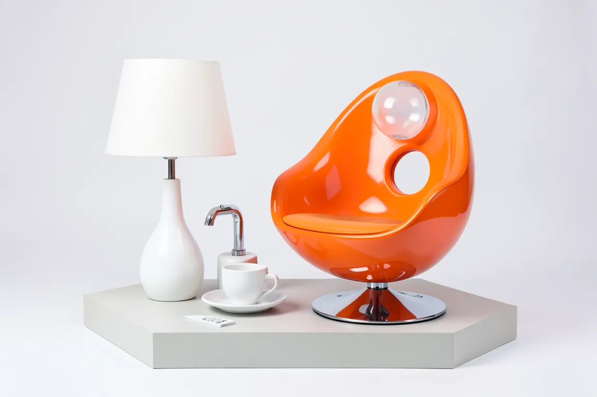

industrial · 1960–1975 · also: Space Age design, Pop plastic design, Sixties plastic furniture
The objects of the plastic age: chairs, lamps and tubs moulded in one piece from fibreglass, acrylic and ABS, with chrome and bright colour, in rounded forms that look like capsules, eggs and pods.

Core thesis
The new plastics free the form: one mould makes a whole object in one piece, and its colour and curve show a hopeful, fast, technical future.
Design principles
Mould each major body in one piece, so that the object has no visible joint on its main surface.
Draw each body as a sphere, an egg, a pod or a tube with soft corners of 25 mm radius or more.
Give each object one saturated colour: orange, red, yellow, white or black, with a gloss finish.
Use chrome-plated steel for the stem, the base or the frame; keep it bright and thin.
Cut round holes or slots in a shell where the form needs light, air or a seat.
Show the object as a sculpture: it stands alone and looks good from every side.
Make each volume read as a capsule: round windows, round hatches and round buttons.